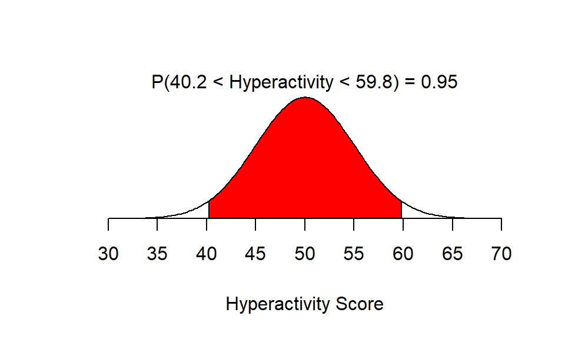
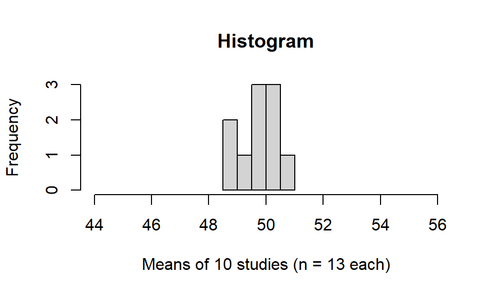
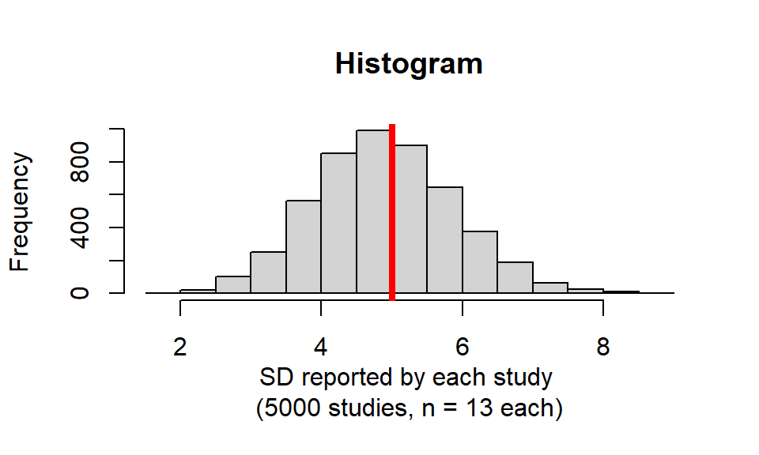
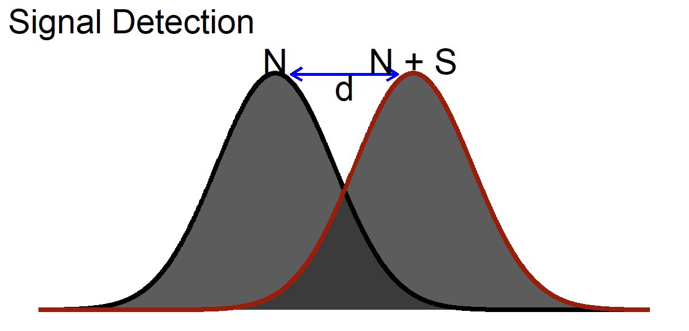
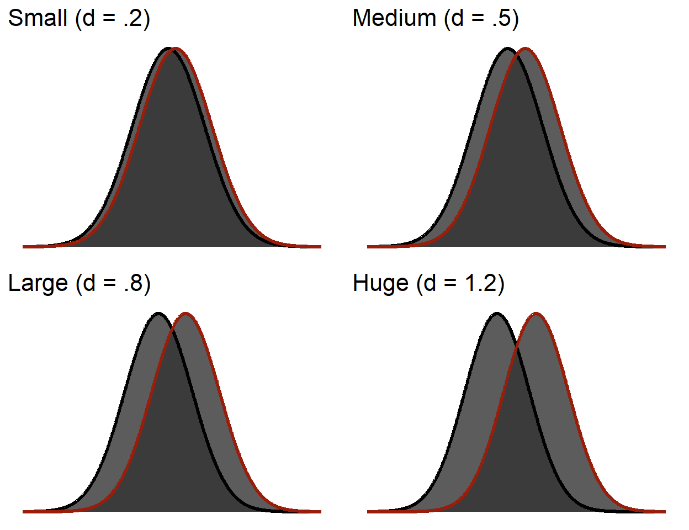
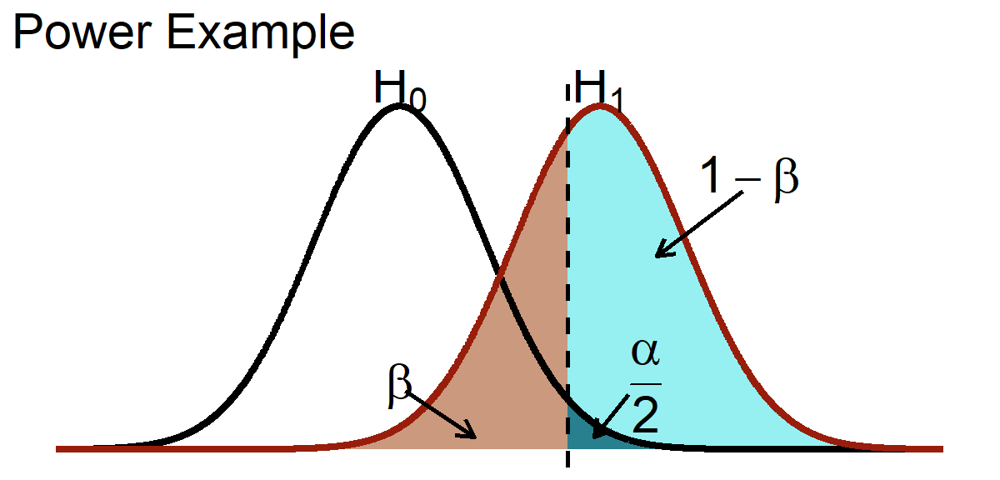
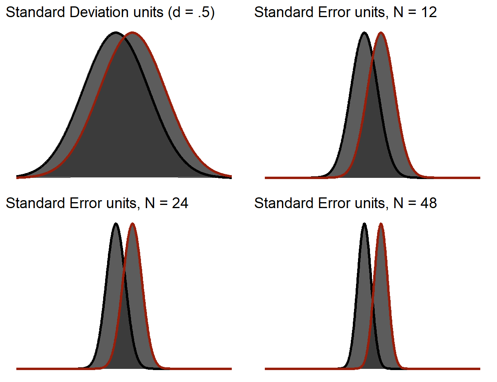
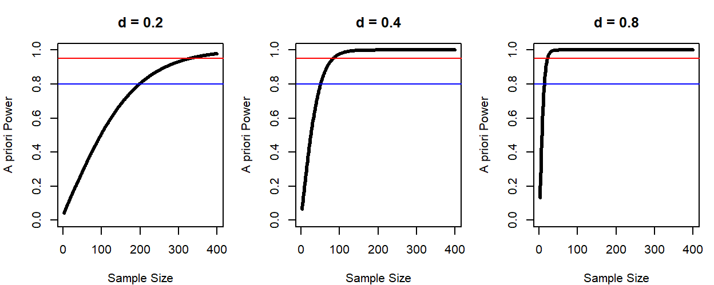
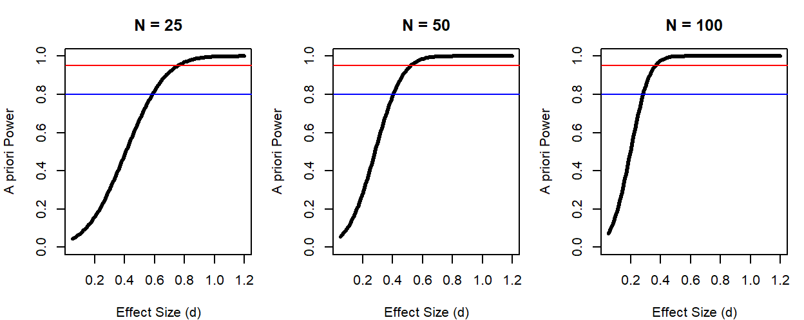
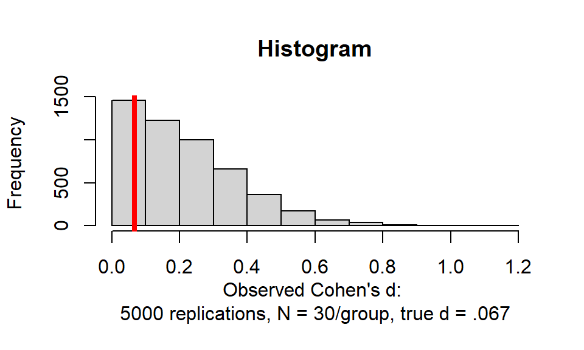

7 Power and Effect Size
NoteSome of Today’s Code Is Not Your Problem
A few figures in this chapter are generated with genuinely unpleasant code. Where you see a plot appear without the code attached, that is deliberate: I hid it because you are not expected to learn it, yet. Every function you are expected to learn is shown, explained, and used more than once.
If you find yourself reading the hidden code anyway, good for you! Dorkaos, the Ancient Greek God of Statistics, is watching, and approves.
TipWhere the Exam Material Lives in This Chapter
This is the longest chapter in the book, so here is the map before you start.
- First section: why power exists, which comes down to the fact that small samples flatter you. Conceptually the hardest part.
- The middle: the vocabulary that most people put on the exams (Type I and Type II error, \(\alpha\), \(\beta\), power) and how to compute power in R. If you are short on time, start at “Type I and Type II Error” and read forward.
- Advanced Topics at the end: for when someone you love runs a pilot study. Not Optional for graduate students.
7.1 Probability Is Fickle
Before we can talk about power, we have to admit something uncomfortable about small samples.
Recall that the standard error is the standard deviation of sample means. Let us build a population for children’s hyperactivity scores, the same population from the one-sample t-test chapter, with \(\mu = 50\) and \(\sigma = 5\).
About 95% of children score between 40.2 and 59.8. Fine. Now let us collect some data.
7.1.1 Ten Small Studies
Suppose we run ten separate studies, each with \(n = 13\) children. Ten data collections, thirteen children each, one hyperactivity score per child.

The mean of those ten sample means was 49.721, comfortably close to \(\mu = 50\). Good.
Now check the spread. Our formula predicts a standard error of
\[ \sigma_M = \frac{\sigma}{\sqrt{n}} = \frac{5}{\sqrt{13}} = 1.39. \]
In reality, those ten studies produced \(SD(\text{sample means}) =\) 0.73.
Those are not the same number. Why?
7.1.2 The Answer Is Unpleasant
Two different things are bouncing around here, and they are worth keeping apart, because this is exactly the two-counts trap the standard error chapter warned about.
The first is not very interesting. We computed a standard deviation from only ten numbers, the ten study means. A standard deviation built from ten values is itself a shaky estimate, and some of that gap is just that.
The second one is the reason this chapter exists. The same disease infects the \(S\) that any single study computes from its thirteen children. With only thirteen people, you are most likely to grab from the fat middle of the distribution, because that is where most people live. The extremes are rare, so small samples usually miss them. Miss the extremes, and your estimate of spread comes out too small.
Let us prove that second one with brute force. We will run 5,000 separate studies of thirteen children each, and look at the standard deviation each study reports back:
set.seed(543)
# Run 5,000 studies. Each one grabs 13 children from a population where we
# KNOW the true spread is sigma = 5, and reports the SD it happened to see.
Sample.SD <- replicate(5000, sd(rnorm(n = 13, mean = 50, sd = 5)))
hist(Sample.SD,
main = "Histogram",
xlab = "SD reported by each study \n(5000 studies, n = 13 each)",
ylab = "Frequency")
abline(v = 5, col = "red", lwd = 4) # the TRUE sigma
The red line is the truth, \(\sigma = 5\). Notice the histogram is not centered on it. In this simulation 55.6% of studies reported a standard deviation below the true value and only 44.4% landed above it. The average study reported 4.89 when the truth was 5.
That is not a rounding artifact, it is a known bias, and the theory predicts it almost exactly. For samples of 13 from a normal population, the expected value of \(S\) works out to 4.897. Our 5,000 simulated studies averaged 4.893. The math and the brute force agree to three decimal places, which is the kind of thing that should make you trust both.
Small samples systematically underestimate variability. This is the problem Gosset walked into when he stopped using a known \(\sigma\) and started using a sample \(S\) as an approximation, and it is why we have a t-distribution at all.
ImportantThis Is the Whole Reason Power Exists
Your sample gives you one guess about the mean and one guess about the spread. Both guesses bounce around, and the smaller the sample, the harder they bounce. Worse, the guess about the spread does not bounce evenly. It lands low more often than high, in a direction that flatters you.
The solution is not to stop guessing. The solution is to work out, before you collect data, how likely you are to detect an effect given your specific sample size and how big the effect probably is.
That calculation is called power. Everything else in this chapter is machinery for doing it.
7.2 Type I and Type II Error
Every hypothesis test ends in a decision, and every decision can be wrong in exactly two ways.
| Treatment works (\(H_0\) FALSE) | Treatment does nothing (\(H_0\) TRUE) | |
|---|---|---|
| Reject \(H_0\) | Correct decision (power) | Type I error (\(\alpha\)) |
| Fail to reject \(H_0\) | Type II error (\(\beta\)) | Correct decision |
Type I error is a false alarm. There is no effect, and you claim there is one. Its long-run rate is \(\alpha\), and you choose \(\alpha\) yourself, usually .05, by simple decree.
Type II error is a miss. There is an effect, and you fail to find it. Its rate is \(\beta\), and you do not get to choose it directly. You have to earn your way out of it.
Power is \(1 - \beta\): the probability of detecting an effect that is genuinely there.
Notice the asymmetry. Alpha is a decision you make in about four seconds. Power is something you buy, with participants, and it is expensive.
WarningWhat Alpha Does Not Mean
Setting \(\alpha = .05\) does not mean any of the following:
- there is a 5% probability that this particular rejected null is true;
- 5% of published findings are wrong;
- your result has a 95% chance of replicating.
It means that if the null hypothesis and its assumptions hold, this procedure falsely rejects about 5% of the time in the long run. The p-value is a statement about a procedure. It cannot read the hidden state of the universe, and it has never once tried.
7.2.1 The Errors Are Not Symmetric in Cost
A Type I error means we run around telling everyone that cookies make children hyperactive when they do not. Parents ban cookies. A generation grows up sad.
A Type II error means cookies do make children hyperactive, we fail to notice, and we spend the next decade blaming the children.
Which error is worse depends entirely on what happens next, which is a question statistics cannot answer for you. A false alarm on a cancer screening costs a biopsy. A miss costs considerably more.
Psychology and neuroscience have historically obsessed over Type I error and treated Type II error as somebody else’s problem. Button and colleagues surveyed the neuroscience literature and estimated median statistical power at around 21% (Button et al. 2013), which means the typical study had roughly a one-in-five chance of finding an effect that was genuinely there. This is one of several reasons the replication crisis arrived carrying luggage and expecting to stay a while.
7.3 Signal Detection Theory
Given that I must estimate my standard error from an \(S\) that bounces around, I need a way to say how “big” an effect is in the first place.
The one-sample t-test chapter ended by handing you a \(d\) and refusing to explain it. Here is the explanation.
Cohen borrowed the idea from signal detection theory, developed for radar operators in World War II who had to decide whether that blip was a plane or noise. The question there was: how strong must a signal be before you can detect it over the noise? For us, the noise is the control condition and the signal is the effect of the treatment.

\[ d = \frac{\mu_{(Noise+Signal)} - \mu_{(Noise)}}{\sigma_{(Noise)}} \]
Signal detection theory also hands us this chapter’s 2×2 for free. Here is the hearing-test version of the table above, and it is the same table:
| There was a beep | There was no beep | |
|---|---|---|
| You said YES | Hit | False alarm |
| You said NO | Miss | Correct rejection |
Hit, miss, false alarm, correct rejection. Power, Type II error, Type I error, correct decision. Same 2×2, different lab coat. Detecting a treatment effect and detecting a faint beep are the same problem, and the reason both fields drew the same table is that both are asking how far the signal has to sit from the noise before you can trust yourself.
7.3.1 Cohen’s \(d\)
For our purposes:
\[ d = \frac{M_{H1} - \mu_{H0}}{S_{H1}} \]
You have seen this formula before, wearing a different hat:
\[ Z = \frac{M - \mu}{S} \]
So Cohen’s \(d\) is in standard deviation units.
That denominator carries an assumption worth naming: we are treating the treatment as something that shifts the distribution without changing its spread. Sometimes that is true. Sometimes a treatment helps some people enormously and others not at all, which changes the spread, and then this formula is quietly describing a world that does not exist.
| Size | \(d\) |
|---|---|
| Small | .2 |
| Medium | .5 |
| Large | .8 |
| Huge | 1.2 |
Those adjectives are easier to trust once you see them. Each panel below shows two distributions separated by the \(d\) in its title:

NoteEven a Huge Effect Overlaps
Look at the bottom-right panel again. That is a huge effect, and the two distributions still share an enormous amount of ground.
That overlap is the point. Two groups can differ by a “large” amount and still contain enormous numbers of people who look exactly like each other. An effect size is a statement about distributions, not about individuals, and it has never promised you a clean separation.
WarningThese Adjectives Are Conventions, Not Laws
Cohen proposed small, medium, and large as rough guidance for a field that had none, and then spent years watching people treat them as physical constants.
A \(d\) of .2 for a cheap public health intervention delivered to forty million people may matter enormously. A \(d\) of 1.1 in a study of twelve undergraduates may matter not at all. Interpret magnitude in context, or do not interpret it.
7.4 Power
Power is the likelihood that a study will detect an effect when there genuinely is one. Power \(= 1 - \beta\), where \(\beta\) is the Type II error rate (Cohen 1962, 1988, 1992).
Here is the whole thing in one picture.

Read it left to right. The black curve is the world where the null is true. The red curve is the world where the effect is real. The dashed line is your critical value, the point past which you will reject the null.
- Everything to the right of the dashed line under the black curve is \(\alpha/2\): rejecting when you should not have.
- Everything to the left of the dashed line under the red curve is \(\beta\): the effect was real and you missed it.
- Everything to the right of the dashed line under the red curve is power.
Move the dashed line left and you gain power while buying more Type I error. Move it right and the reverse. Push the red curve further right, or make both curves narrower, and power improves without that trade. Which is the entire game.
7.4.1 Uses of Power
A priori power means setting a target likelihood of success (say, power = .80) at a given \(\alpha\) (say, .05), assuming a true effect size, and solving for the sample size you need (Cohen 1962, 1988, 1992). This is the useful one. It is also the hard one, because it requires knowing the true effect size, which is the thing you are running the study to find out.
We used to tell people to go find a meta-analysis. Then it turned out meta-analytic effect sizes are inflated by publication bias (Kicinski et al. 2015), because studies that found nothing were never published and therefore never averaged in. A rule of thumb: assume your effect is small-to-medium, \(d = .3\) or \(.4\), and be pleasantly surprised rather than catastrophically wrong.
Post-hoc power means estimating the power you achieved using the effect size you observed, your sample size, and your \(\alpha\).
Post-hoc power is meaningless. It is worse than meaningless, because it looks like information.
ImportantPost-Hoc Power Is a Ghost
Observed power is a one-to-one function of your p-value. A significant result always yields high observed power; a non-significant result always yields low observed power. It cannot tell you anything your p-value did not already tell you, and it is frequently used to argue “our null result was just underpowered,” which is circular reasoning with a calculator (Hoenig and Heisey 2001).
Worse, the effect size feeding it is biased. As we saw at the start of this chapter, small samples underestimate \(\sigma\). A smaller denominator makes \(d\) bigger. Your observed effect is flattering you, and post-hoc power then launders the flattery into a number with a decimal point.
Compute power before you run the study. Afterwards, report the confidence interval and let it speak.
7.5 Power and Significance Testing
There is a subtlety here that trips up nearly everyone, so we will be slow about it.
Everything above drew the curves in standard deviation units. But significance testing does not happen in standard deviation units. It happens in standard error units. And the standard error shrinks as \(N\) grows, because \(S_M = S/\sqrt{n}\).
The distance between the peaks is the effect size, and it does not change with sample size. What changes is how wide the curves are.
TipHomer Simpson and the Statistically Significant Hair
In “Simpson and Delilah” (The Simpsons, S2:E2), Homer takes Dimoxinil and wakes up the next morning with a full luscious head of hair. That is an enormous effect size.
In reality, Minoxidil grows back very little hair, after months of twice-daily application, in a subset of men, most of whom keep checking the mirror hopefully (speaking from experience). The effect is genuinely small. It is also statistically significant, because “most men experience some growth beyond noise,” and noise here is defined in standard error units, not standard deviation units.
Statistically significant is not the same as clinically significant. It is not even the same as noticeable. Homer’s hair is a story about effect size. The clinical trial is a story about standard errors.
Watch the curves narrow while the peaks stay exactly where they are. The effect below is a medium one, \(d = .5\), in all four pictures.

The area representing \(1 - \beta\) grows as we add participants, because the curves get thinner while the distance between them stays fixed.
This is why effect size is described as independent of sample size and significance is not. That statement is true if you know the population standard deviation \(\sigma\). We never do. We approximate it with \(S\), so our observed effect size is itself another guess, subject to the same fickleness we opened this chapter with. Which is why we hope meta-analysis, averaging over many studies, gives a steadier estimate, right up until publication bias mugs it in an alley.
WarningAdvanced: Effect Size and the Pilot Study Trap
A few lines ago I said sample size is independent of effect size. That is half true, and here is the other half.
Look at the formula again: \(d = \frac{M - \mu}{S}\). We are estimating two things from our sample to guess at one true effect size in the population. In a small sample, both of them bounce around. But there is a hidden way they bounce, and it is not symmetric.
In a small sample you are unlikely to catch the genuinely abnormal people, because there are not many of them and you did not grab many people. Miss the extremes and your \(S\) comes out smaller than it should be. That is bias, not bad luck, and it happens on average.
So what? Look at where \(S\) sits. It is the denominator. When the denominator comes out too small, the effect size comes out too big.
How bad is it? Bad. Under realistic small-sample conditions the observed effect can run roughly twice what it should be. I am not asking you to take my word for it, because there is a simulation in the Advanced Topics section at the end of this chapter that shows exactly this happening.
Now think about what that means for a pilot study, where the entire point is to run a small sample to decide whether the real study is worth doing. Your pilot is systematically biased toward telling you yes. Then you power your real study on that inflated number, recruit far too few people, and find nothing.
There is no consensus in the literature beyond “interpret with caution,” and I show a couple of the proposed fixes in the advanced section. My own solution is to throw lots of undergraduates into the volcano and hope it does not happen to me.
7.6 Estimating A Priori Power in R
Base R ships with a power function for t-tests. No package required.
It needs five pieces of information, and you already know all of them by other names:
| Argument | What it is in the words we have been using |
|---|---|
n |
sample size |
delta |
the effect size, in Cohen’s \(d\) units (see the tip below) |
sd |
the standard deviation (set this to 1 and delta becomes \(d\)) |
sig.level |
\(\alpha\), your Type I error rate, almost always .05 |
power |
\(1 - \beta\), the chance of catching the effect if it is real |
You fill in four and leave one as NULL. R solves for the blank.
ImportantWhy Everyone Uses .80, and Why That Is Not Very Impressive
Convention says aim for power of .80. Say that out loud in the other direction: \(\beta = 1 - .80 = .20\), so a study designed to the field’s standard misses a real effect one time in five. That is the norm, not the failure case.
Plenty of people now argue for .95, which drops the miss rate to one in twenty. Excellent idea. Now buy it.
Sample size does not scale linearly with power. Going from .80 to .95 does not cost you a few extra participants, it costs a great many, and we will watch exactly how badly it scales later in this chapter. Get your wallet out.
TipHow to Make power.t.test Speak Cohen’s d
power.t.test() wants a raw mean difference (delta) and a standard deviation (sd), not a \(d\).
The trick: set sd = 1 and put your \(d\) in delta. Because \(d = \delta / \sigma\), setting \(\sigma = 1\) makes the raw difference and the standardized difference the same number.
power.t.test(delta = 0.4, sd = 1, ...) # this is d = .4Everything in this chapter uses that convention. If you ever want to work in raw units instead, supply both the real delta and the real sd and it will happily oblige.
The type argument picks which t-test you mean:
type |
Design | What n means |
|---|---|---|
"one.sample" |
one group vs. a fixed value | total participants |
"two.sample" |
two independent groups | participants per group |
"paired" |
same people measured twice | number of pairs |
Getting n wrong here is the single most common power mistake. A two.sample answer of 64 means 128 people.
7.6.2 Solving for Power Instead of N
If the sample size is already fixed, perhaps because that is how many children were available, or how much money you had, run it the other way.
# Same function. This time n is known and power is the NULL.
AP.Power.N36 <- power.t.test(n = 36, delta = .4, sd = 1,
sig.level = 0.05, power = NULL,
type = "one.sample",
alternative = "two.sided")
round(AP.Power.N36$power, 3)[1] 0.646With 36 children and a true \(d\) of .4, we had a 64.6% chance of detecting the effect. Which means we had a 35.4% chance of missing it entirely, publishing nothing, and concluding cookies are harmless.
7.6.3 Solving for the Effect Size You Could Detect
The third useful question: given my sample, what is the smallest effect I could reliably find?
# Third question, same function. Now delta is the NULL.
Eff.Power.N36 <- power.t.test(n = 36, delta = NULL, sd = 1,
sig.level = 0.05, power = .80,
type = "one.sample",
alternative = "two.sided")
round(Eff.Power.N36$delta, 3)[1] 0.48With 36 children, the smallest effect we can detect 80% of the time is \(d =\) 0.48. Anything smaller than that, we will usually miss.
This is the calculation to run when a reviewer asks why your null result should be believed. “We had 80% power to detect effects of \(d \geq\) 0.48, so we can reasonably rule out effects of that size, but not smaller ones” is a defensible sentence. “It wasn’t significant” is not.
7.7 Sample Size and Power Are Not Linear
At a fixed effect size, adding participants buys you power, but not at a constant rate.

The blue line is 80% power; the red line is 95%. Notice how far right the curve for \(d = .2\) has to travel before it crosses either one, and how quickly \(d = .8\) gets there.
The larger the effect, the fewer participants you need. Which is a comforting sentence until you remember that you do not control the effect size, and that most real psychological effects are small.
7.7.1 Effect Size and Power Are Also Not Linear
Flip it around: hold the sample size fixed and vary the effect.

With 25 people you need a whopping effect before you are likely to find anything. With 100, medium effects come into range. The curves are S-shaped, not straight, which means there is a region where adding a few participants helps enormously and a region where it barely matters at all.
NotePower for the Other Two t-Tests Lives With Those Tests
Everything above used type = "one.sample", because the one-sample t-test is the only one you have met so far.
The other two work identically, with one argument changed. Rather than teach them here to a reader who has not seen the tests yet, each one waits in its own chapter:
- Two separate groups: the independent-samples chapter closes with
type = "two.sample", wherenmeans per group, plus Hedges’ correction for the bias small samples put into \(d\). - The same people twice: the paired-samples chapter closes with
type = "paired", and shows how much cheaper a repeated-measures design is for the same effect.
Come back here for the concepts. Go there for the arithmetic.
7.8 The Short Story
- Small samples underestimate variability, in a direction that flatters you.
- Type I error is a false alarm and its rate is \(\alpha\), which you choose. Type II error is a miss and its rate is \(\beta\), which you must earn your way out of.
- Power is \(1 - \beta\): the probability of finding a real effect. It depends on the effect size, the sample size, and \(\alpha\).
- Effect size lives in standard deviation units. Significance lives in standard error units. Adding participants narrows the curves without moving the peaks.
- Compute power before you run the study. Post-hoc power is a restatement of your p-value wearing a disguise.
power.t.test()solves for whatever you leaveNULL. Setsd = 1and put \(d\) indelta.- The other two t-tests use the same function with
typechanged, and each is powered in its own chapter. Fortwo.sample,nis per group, so double it. Forpaired,nis the number of pairs anddeltais \(d_z\). - Non-significant does not mean no effect. Very often it means no chance.
7.9 Advanced Power Section
Everything above is what you need to design a study and defend it. What follows is the part that explains why the field got this so wrong for so long. You are not required to master it.
7.10 The Observed Effect Size Is Also a Guess
Running one small pilot study to estimate an effect size used to be standard practice. It is a catastrophe, and we can show exactly how bad it is.
Consider a Mozart-effect study: compare spatial reasoning right after listening to Mozart’s Sonata for Two Pianos in D Major, K. 448, against a control group who listened to Bach’s Brandenburg Concerto No. 6, matched on modality, tempo, and duelling voices. If the effect is specific to Mozart, Bach should do nothing.
Simulate \(\mu_{Mozart} = 109\), \(\mu_{Bach} = 110\), \(\sigma = 15\) in both, with \(n = 30\) per group. The true effect is
\[ d_{true} = \frac{110 - 109}{15} = 0.067, \]
which is to say, nothing. There is no Mozart effect in this simulated world. Now watch what a single study reports.
set.seed(666)
n <- 30
Mozart.Sample <- rnorm(n, 109, 15)
Bach.Sample <- rnorm(n, 110, 15)
Sp_mb <- sqrt(((n-1)*sd(Mozart.Sample)^2 + (n-1)*sd(Bach.Sample)^2) / (2*n - 2))
Obs.d <- abs(mean(Mozart.Sample) - mean(Bach.Sample)) / Sp_mb
round(Obs.d, 3)[1] 0.428Our one study observed \(d =\) 0.428, against a truth of \(0.067\).
Now re-run that same study 5,000 times and look at the distribution of observed effect sizes.

The red line is the truth. Look at how much of the distribution sits far to the right of it.
In this simulation, an observed \(d\) at least as large as our one study’s 0.428 occurred 10.62% of the time. Worse, there was a 46.32% chance of observing something above the “small effect” threshold of \(d = .2\), in a world where the true effect is essentially zero.
WarningWhy Pilot Studies Cannot Estimate Effect Sizes
A small pilot gives you a draw from that histogram. Not the red line. A draw.
If you then feed that draw into a power analysis, you will compute the sample size needed to detect an effect that does not exist, feel rigorous about it, and run a study doomed before recruitment began.
Pilot studies are for testing whether your procedure works, whether participants understand the instructions, and whether the software crashes. They are not for estimating effect sizes. They are far too small to do that, which is what makes them pilots.
7.11 Safeguard Power
If you must use an observed effect size from a previous study, do not use the point estimate. Use the lower bound of its confidence interval. This is called safeguard power (Perugini et al. 2014), and it asks the only sensible question: what if the original study was lucky?
# CI for d, using the standard large-sample approximation
d_ci <- function(d, n1, n2) {
se <- sqrt((n1 + n2)/(n1 * n2) + d^2 / (2 * (n1 + n2)))
c(lower = d - 1.96 * se, d = d, upper = d + 1.96 * se)
}
published <- d_ci(0.50, 80, 80)
round(published, 3)lower d upper
0.185 0.500 0.815 A published effect of \(d = .50\) from a reasonably sized study, 80 per group, still has a confidence interval reaching down to 0.185. Powering for the point estimate and powering for that lower bound produce very different studies:
c(powered_for_point_estimate =
ceiling(power.t.test(delta = 0.50, sd = 1, power = .80,
type = "two.sample")$n),
powered_for_lower_bound =
ceiling(power.t.test(delta = published["lower"], sd = 1, power = .80,
type = "two.sample")$n))powered_for_point_estimate powered_for_lower_bound
64 459 If the original estimate was accurate, both studies find the effect. If the original was a lucky draw from the high end of its own sampling distribution, only the second one does. The first returns a null result, and everybody spends eighteen months arguing about whether the replication was competent.
WarningNow Try It With a Small Original Study
Run the same calculation on a \(d = .50\) reported from 25 participants per group:
round(d_ci(0.50, 25, 25), 3) lower d upper
-0.063 0.500 1.063 The lower bound is negative. The confidence interval includes zero, and no honest safeguard-power calculation is possible, because the original study is compatible with an effect in the opposite direction.
This is not a defect in the method. It is the method working correctly and telling you something you did not want to hear: that study never established an effect size at all. It established a range so wide that it contains “helps a lot,” “does nothing,” and “actively harms.”
Powering a replication off a point estimate like that is not a calculation. It is a wish with decimal places.
7.12 When the Formula Will Not Do: Simulate
power.t.test() handles t-tests. The moment your design gets more complicated, unequal group sizes, non-normal outcomes, planned attrition, an outcome measured on a bounded scale, the closed-form solution runs out.
The general-purpose answer is to simulate. Build the world you expect, run your analysis on it thousands of times, and count how often you win.
# Build a machine that runs a whole study over and over and reports how
# often it found the effect. That proportion IS power.
simulate_power <- function(n_per_group, true_d, n_sims = 2000, alpha = .05) {
hits <- replicate(n_sims, { # run one study, n_sims times over
# Build two groups from populations we KNOW differ by true_d.
# Group 2 is centered on 0, group 1 on true_d, both with sd = 1,
# so the gap between them is exactly true_d in standard deviations.
g1 <- rnorm(n_per_group, mean = true_d, sd = 1)
g2 <- rnorm(n_per_group, mean = 0, sd = 1)
# Run the test. This line is TRUE if we caught the effect, FALSE if we missed.
t.test(g1, g2)$p.value < alpha
})
# hits is now 2,000 TRUEs and FALSEs. R treats TRUE as 1 and FALSE as 0,
# so the mean of them is the proportion of studies that succeeded.
mean(hits)
}
set.seed(343)
simulate_power(n_per_group = 30, true_d = 0.5)
# compare to the closed-form answer
power.t.test(n = 30, delta = 0.5, sd = 1, type = "two.sample")$power[1] 0.4735
[1] 0.477841Read what that function does one more time, because the logic is the entire idea of power. We built a world where the effect is real and we know its exact size. Then we ran the study 2,000 times in that world and counted how often the t-test noticed. If it noticed 480 times out of 2,000, our power is .48, and the other 1,040 studies were funded, staffed, and wasted.
The last two lines are the important habit: the simulation and the formula agree. Always check a simulation against a known answer before you trust it on a problem where you do not have one.
The simulation agrees with the formula, which is how you know the simulation is trustworthy. Now you can change the generating model to anything you like, skewed outcomes, 20% dropout, a ceiling effect, and get an answer where no formula exists.
simulate_power_with_dropout <- function(n_per_group, true_d,
dropout = 0.20, n_sims = 2000) {
keep <- round(n_per_group * (1 - dropout))
replicate(n_sims, {
g1 <- rnorm(keep, mean = true_d, sd = 1)
g2 <- rnorm(keep, mean = 0, sd = 1)
t.test(g1, g2)$p.value < .05
}) |> mean()
}
set.seed(343)
simulate_power_with_dropout(n_per_group = 30, true_d = 0.5)[1] 0.4115Twenty percent attrition costs real power. Plan for it before it happens, not in the limitations section afterwards.
7.13 Other Tools
power.t.test() is deliberately limited. For anything beyond t-tests:
- the
pwrpackage covers correlations, proportions, chi-square, ANOVA, and regression with the same solve-for-NULLlogic; - G*Power is free stand-alone software and remains the standard for grant applications for people who do not code;
simrdoes simulation-based power for mixed models;- and for genuinely novel designs, the
simulate_power()pattern above generalizes to anything you can write down.
NIH and NSF require a power analysis with every grant application. In practice it is difficult, because you must estimate an effect size you do not yet know. Assume small, plan for attrition, and remember that the most expensive study is the underpowered one that answers nothing.
ImportantCohen’s Compromise
Cohen’s recommendation was simple: do the significance test and report the effect size.
Two pieces of information. First, is the result distinguishable from sampling error? Second, does the effect mean anything at all?
He proposed this in 1962. APA made it standard in 2010.
Forty-eight years. Please do not make it take any longer.
NoteFigure Credit
The power and signal-detection illustrations in this chapter are adapted from Kristoffer Magnusson’s textbook-illustration walkthrough, updated for current ggplot2 syntax.
Cohen, Jacob. 1962. “The Statistical Power of Abnormal-Social Psychological Research: A Review.” The Journal of Abnormal and Social Psychology 65 (3): 145–53. https://doi.org/10.1037/h0045186.
Cohen, Jacob. 1988. Statistical Power Analysis for the Behavioral Sciences. 2nd ed. Lawrence Erlbaum Associates.
Cohen, Jacob. 1992. “A Power Primer.” Psychological Bulletin 112 (1): 155–59. https://doi.org/10.1037/0033-2909.112.1.155.
Hoenig, John M., and Dennis M. Heisey. 2001. “The Abuse of Power: The Pervasive Fallacy of Power Calculations for Data Analysis.” The American Statistician 55 (1): 19–24. https://doi.org/10.1198/000313001300339897.
Kicinski, Michal, David A. Springate, and Evangelos Kontopantelis. 2015. “Publication Bias in Meta-Analyses from the Cochrane Database of Systematic Reviews.” Statistics in Medicine 34 (20): 2781–93. https://doi.org/10.1002/sim.6525.
Perugini, Marco, Marcello Gallucci, and Giulio Costantini. 2014. “Safeguard Power as a Protection Against Imprecise Power Estimates.” Perspectives on Psychological Science 9 (3): 319–32. https://doi.org/10.1177/1745691614528519.